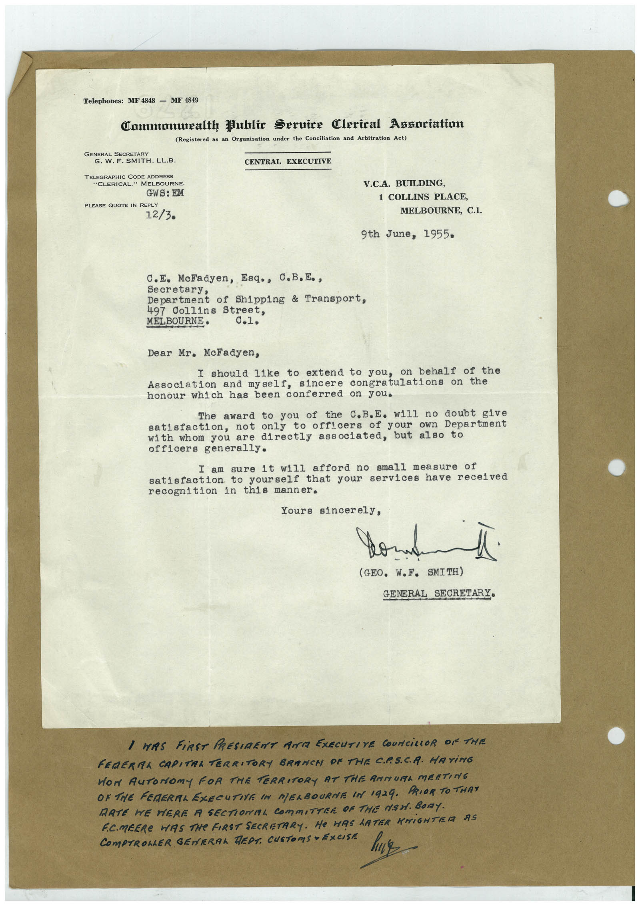

Book 1 · scan 088


Description
Transcription
Context
Review notes
Compare the machine draft with the scan. Handwriting and names need human review.
Artifacts
Edit the artifacts field in this note’s frontmatter to change these records. This summary is generated.
B01-S088-A01 — Letter & Handwritten note — Book 1, scan 088
Types: Typed document, Letter, Handwritten note
Scope: Whole scanned page; individual items can be split out during review.
Caption: Not mapped yet.
Caption source: Not recorded yet.
Caption status: unmapped
Machine transcription
Telephones: MF 4848 - MF 4849 Commonuealth Public Seruire Clerical Angoriation (Registered as an Organisation under the Conciliation and Arbitration Act) GENERAL SECRETARY G. W. F. SMITH, LL.B. CENTRAL EXECUTIVE TELEGRAPHIC CODE ADDRESS "CLERICAL," MELBOURNE. GWS: EM PLEASE QUOTE IN REPLY 12/3. V.C.A. BUILDING, 1 COLLINS PLACE, MELBOURNE, C.1. 9th June, 1955• c.E. McFadyen, Esq., C.B.E., Secretary, Department of Shipping & Transport, 497 Collins Street, MELBOURNE• Dear Mr. McFadyen, I should like to extend to you, on behalf of the Association and myself, sincere congratulations on the honour which has been conferred on you. The award to you of the C.B.E. will no doubt give satisfaction, not only to officers your own Department with whom you are directly associated, but also to officers generally. I am sure it will afford no small measure of satisfaction to yourself that your services have received recognition in this manner. Yours sincerely, (GEO. W.F. SMITH) GENERAL SECRETARY• I WAS FiRST PRESIDENT ANT EXECUTIVE COUNCiLLOR OF THE FEDERMA CAPITRA TERRITORY BRANCH OF THE CP.SCA. HATING Wor AuToNomy FOR THE TERRITORY AT THE AMMURL MEETING OR THE FERERAL EZECUTIVE IN MERBOURNE IN 1924. PRIOR TO THAT DATE WE WERE A SECTIONAL COMMITTER OF THE MSH. BOnY. F.C.MEERe WAS THe FIRST SECRETARY. He HAS LATER KNIGHTER AS COmPTROLLER GENERAL REDS. CUSTOMS • EXCISE